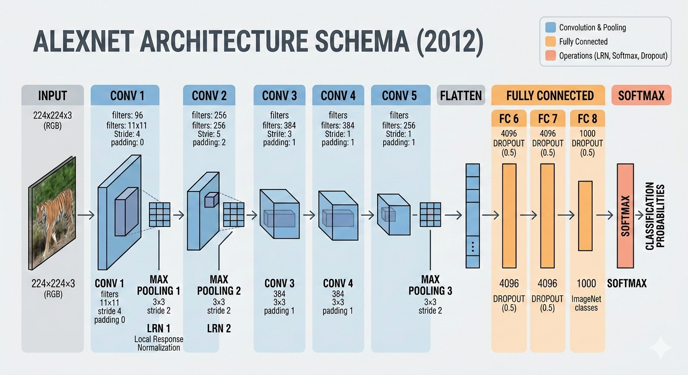

ImageNet Classification with Deep Convolutional Neural Networks
Paper: ImageNet Classification with Deep Convolutional Neural Networks
Authors: Alex Krizhevsky, Ilya Sutskever, Geoffrey E. Hinton
Published: 2012 (NIPS)
Commonly Known As: AlexNet
Significance: Won the 2012 ImageNet Large Scale Visual Recognition Challenge (ILSVRC)

Introduction
The ImageNet challenge (ILSVRC) presented one of the most demanding visual recognition tasks: classifying images into 1,000 different categories from a dataset of 1.2 million high-resolution training images. This task required systems to not only recognize obvious objects but also distinguish between subtle variations (like different dog breeds).
Before 2012, the best approaches used hand-crafted features combined with machine learning algorithms like SVMs. While these methods showed promise, they plateaued at around 74-76% accuracy. The natural question was: could deep learning break through this ceiling?
Krizhevsky, Sutskever, and Hinton demonstrated that deep convolutional neural networks (CNNs), combined with modern computational resources (GPUs), could dramatically outperform existing methods. This paper introduced AlexNet, which achieved 63.3% top-1 accuracy and 85.2% top-5 accuracy, a massive improvement that fundamentally changed how the industry approached computer vision.
Procedures
The AlexNet Architecture
AlexNet consisted of 8 layers (5 convolutional, 3 fully connected) with the following key specifications:
Conv1: 96 filters, 11×11, stride 4
MaxPool1: 3×3, stride 2
Conv2: 256 filters, 5×5, stride 1
MaxPool2: 3×3, stride 2
Conv3: 384 filters, 3×3, stride 1
Conv4: 384 filters, 3×3, stride 1
Conv5: 256 filters, 3×3, stride 1
MaxPool3: 3×3, stride 2
FC1: 4096 units
FC2: 4096 units
FC3: 1000 units (output)
Key Innovations
ReLU Activation: The network used ReLU instead of sigmoid or tanh. This choice was crucial - ReLU provided faster convergence and allowed the network to train effectively on GPUs.
GPU Training: This was trained on two NVIDIA GTX 580 GPUs for 6 days. Without GPUs, this would have been impractical. The paper explicitly states: "Our network's parameters were initialized randomly... [and] the learning rate was initially 0.01 and was divided by 10 when the validation error rate plateaued."
Data Augmentation: The authors significantly expanded their training set by artificially creating variations: horizontal flips, random crops at different locations, and random intensity changes. This was essential for preventing overfitting on the relatively small dataset.
Dropout Regularization: Dropout was applied in the fully connected layers (with dropout rate of 0.5) to further prevent overfitting. This technique randomly deactivates neurons during training, forcing the network to learn with different subsets of features.
Training Details
The network was trained using stochastic gradient descent with momentum (momentum=0.9). Batch size was 128. Training took roughly 90 epochs. The validation accuracy plateaued after about 100 hours of training.
Every figure here is recomputed in the browser from the layer definitions in the paper, so the totals are summed rather than quoted. The two lanes are not decoration: AlexNet was genuinely split across two GTX 580 cards with 3 GB each, and Conv2, Conv4 and Conv5 connect only to feature maps on their own GPU — which is why their parameter counts use half the previous depth. The lanes exchange feature maps only at Conv3 and in the fully connected layers — marked in red — while Conv2, Conv4 and Conv5 never leave their own card. The slab sizes tell the other half of the story: spatial resolution collapses from 224 to 6 while channel depth climbs, and the five convolutional layers together hold under 4% of the network's parameters. Almost everything sits in the fully connected layers, and that is the memory pressure the split was built to relieve.
Results
Accuracy Metrics
The results were groundbreaking. AlexNet achieved 63.3% top-1 error rate (meaning 36.7% correct on the first prediction) and 85.2% top-5 error rate on the test set. To put this in perspective, the next-best method at the time achieved only 74.7% top-5 error, a gap of nearly 10 percentage points.
Ablation Studies
The authors performed ablation studies to understand which components mattered most. When they removed the convolutional layers and replaced them with fully connected layers, accuracy dropped significantly. This demonstrated that the local connectivity patterns learned by convolutions were essential.
Similarly, removing data augmentation or dropout led to measurable decreases in validation accuracy. These ablations proved that the regularization techniques weren't just tricks, they were necessary components of the approach.
Qualitative Analysis
Beyond accuracy numbers, the authors examined what the network learned. The first convolutional layer learned edge detectors and simple textures, classic features you'd expect. Deeper layers learned increasingly complex patterns: corners, circles, and finally, object-like features. This hierarchy of features was elegant proof that the network was learning meaningful representations.
Conclusion
The researchers concluded that deep convolutional neural networks, combined with GPUs and modern training techniques, could achieve state-of-the-art results on large-scale image classification problems. They emphasized that depth was crucial as simply having more parameters wasn't enough; the hierarchical structure of convolutions was essential.
They also noted that the improvements came not from a single innovation, but from the combination: ReLU activations for training efficiency, data augmentation for regularization, dropout for preventing co-adaptation, and GPU computing for scalability. This holistic approach became the template for deep learning in computer vision.
Personal Reflection
Reading this paper 12+ years after publication is fascinating because you can see how it shaped everything that came after. Every modern computer vision model owes something to AlexNet's architecture and training approach.
What strikes me most is how the paper combines bold experimentation (using GPUs, trying ReLU widely, extensive data augmentation) with careful empirical validation (ablation studies showing what matters). The authors didn't just achieve good accuracy but they provided insights into why their approach worked.
The GPU training point is particularly relevant. This paper demonstrated that computational resources weren't just a convenience - they were a game-changer. It wasn't that CNNs suddenly got better in 2012; researchers had proposed deep architectures before. What changed was the practical ability to train them effectively.
One limitation I note: the paper is dataset-specific. The conclusions might not fully generalize to other domains (medical imaging, satellite imagery, etc.). However, subsequent work by the same authors (and many others) proved that the principles were broadly applicable.
Finally, the writing is clear and the experimental methodology is sound. The authors present their methods, report results honestly (including failure cases in ablation studies), and discuss implications thoughtfully. This is a masterclass in academic clarity - a paper worth reading not just for its results, but for how to conduct and present research.